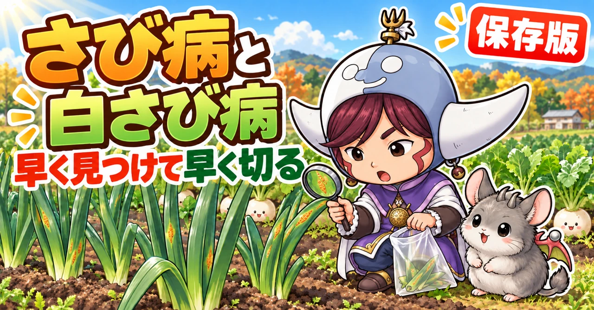

さび病・白さび病対策の決定版｜ねぎ・にんにく・玉ねぎのオレンジの点と、かぶ・大根の白い点の見分け方と防ぎ方

📖 この記事の目次
この記事で分かること
- さび病は、ねぎ、にんにく、玉ねぎ、らっきょう、にらなどの葉に、鉄のさびのようなオレンジ色の小さな点ができる病気です。かびのなかまの菌が原因で、点から出る粉（胞子）が風で飛んで広がります。
- 白さび病は、かぶ、大根、小松菜、白菜など、アブラナ科の野菜の葉の裏に、白いいぼのような点ができる病気です。名前は似ていますが、さび病とは別の病気です。
- どちらも、雨が続いて湿気が多いときに広がりやすく、比較的涼しい春と秋に多く出ます。
- 肥料は多すぎても、足りなくても、さび病が出やすくなります。追肥は量を守ります。
- いちどかかった葉は治りません。出たら早めに葉を切り取り、袋に入れて畑の外へ出します。
- 予防の基本は、水はけをよくする、風通しをよくする、肥料を適量にする、被害を受けた葉を畑に残さない、の4つです。
ねぎの葉をよく見ると、オレンジ色の小さな点がぽつぽつとついている。指でこすると、オレンジ色の粉が指につく。にんにくの収穫が近づいた春、葉がいつのまにかオレンジ色の点だらけになって、黄色く枯れてきた。かぶの葉を裏返したら、白いいぼのようなものがたくさんついていた。こうした症状は、さび病や白さび病かもしれません。
どちらも、いちど広がると止めるのが難しい病気です。ただ、出やすい時期と条件が分かっていれば、薬を使わなくても、かなり防ぐことができます。この記事では、さび病と白さび病の見分け方から、出やすい時期、予防、出てしまったときの対処、野菜ごとの注意まで、順番に書いていきます。
早見：さび病と白さび病
さび病
- かかる野菜：ねぎ、にんにく、玉ねぎ、らっきょう、にらなど（ねぎのなかま）
- 症状：葉に、オレンジ色や赤茶色の、少し盛り上がった小さな点。こすると、さびのような色の粉がつく
- 出やすい時期：春と秋。比較的涼しく、雨が続くころ
- 広がりかた：点から出る胞子が、風や雨で飛ぶ
- やること：被害の葉を切り取って畑の外へ。水はけ、風通し、肥料の量を整える
白さび病
- かかる野菜：かぶ、大根、小松菜、白菜、水菜など（アブラナ科）
- 症状：葉の裏に、白いいぼのような小さな点。葉の表は、黄色っぽくぼやけた模様。大根では、根の表面に黒い輪のような模様が出ることも
- 出やすい時期：晩秋と早春。雨や夜露が多いころ
- 広がりかた：白い点が破れて、中の胞子が飛ぶ
- やること：被害の葉を袋で覆って取る。水はけをよくし、密植と肥料の多すぎを避ける
まちがえやすい症状
- ねぎの葉の白いかすり模様 → アザミウマ（小さな虫）のしわざ。オレンジ色の点はない
- 玉ねぎやねぎの葉の、うすい黄色の大きめの斑点と、湿った日のかび → べと病
- 葉の先から黄色く枯れる → 肥料切れや、水不足、寒さのこともある
べと病とのちがい
玉ねぎやねぎには、べと病という病気もよく出ます。べと病は、葉にうすい黄色っぽい、ぼんやりした大きめの斑点ができ、湿った日には、斑点の上に灰色からうす紫色のかびが生えます。ひどくなると、葉がその部分から折れて枯れます。さび病の、小さく盛り上がったオレンジ色の点とは、色と形で見分けられます。どちらも湿気の多い時期に出るので、同じ畑で両方が出ることもあります。
アザミウマとのちがい
ねぎや玉ねぎの葉に、白っぽいかすれた模様や、すじ状の傷があれば、アザミウマという小さな虫が汁を吸ったあとです。よく見ると、細長い小さな虫が葉のすき間にいます。オレンジ色の点や、こすってつく粉はありません。虫のしわざなら、病気の対策ではなく、虫の対策をします。

さび病を知る
どんな病気か
さび病は、かびのなかまの菌が、葉について増える病気です。葉に、鉄のさびのようなオレンジ色の小さな点ができるので、この名前がついています。この点の中には、胞子という、植物でいえばタネのようなものがたくさん詰まっていて、点が破れると、胞子が風や雨で飛んで、まわりの葉や株にうつっていきます。
かかりやすい野菜
ねぎ、にんにく、玉ねぎ、らっきょう、にら、わけぎなど、ねぎのなかまに多く出ます。畑にこれらの野菜をいっしょに植えていると、ひとつの野菜で出たさび病が、となりの野菜にもうつることがあります。
いちどかかると治らない
さび病にかかった葉は、元には戻りません。オレンジ色の点が増えると、葉は光を受けて栄養を作る力が落ち、やがて黄色く枯れていきます。葉がやられると、株の育ちが止まり、ねぎは太らず、にんにくや玉ねぎは玉が大きくなりにくくなります。だからこそ、出る前の予防と、出はじめの早い手当てが大切です。
どのくらいの被害になるか
- ねぎ：葉が見た目悪くなり、太りが悪くなる。ひどいと株ごと枯れる
- にんにく：葉が早く枯れ、玉が大きくなりにくい
- 玉ねぎ：葉が早く枯れ、玉の太りが止まる
- にら：刈り取ったあとの葉にもくり返し出て、収穫が減る
どの野菜も、葉が光を受けて作った栄養で育つので、葉がやられると、食べる部分も育たなくなります。
菌は、被害の葉で次の季節を待つ
さび病の菌は、かかった葉の上で冬や夏を越し、雨が続いて条件がそろうと、また広がりはじめるとされています。前の年にさび病がたくさん出た畑では、次の年も出やすくなります。被害を受けた葉を畑に残さないことが、次の年の予防になります。
さび病の見分け方
はじめは、小さな点
出はじめは、葉に、針でついたような、ごく小さな赤っぽい点が、ぽつぽつと出ます。よく見ないと見落とすくらいの大きさです。株の下のほう、地面に近い葉から出はじめることが多いので、見回りのときは、下の葉もよく見ます。
進むと、オレンジ色の盛り上がり
点が大きくなると、少し盛り上がった、だ円形のオレンジ色の斑点になります。この斑点が破れると、中から、さびのような色の粉が出てきます。指でこすると、オレンジ色の粉が指につくので、ほかの症状と見分けられます。
さらに進むと、葉が枯れる
斑点が葉いっぱいに広がると、葉全体が黄色っぽくなり、先から枯れていきます。株全体がオレンジ色っぽく見えるほどになると、手当ては難しくなります。
見回りのこつ
- 晴れた日の明るい時間に、葉を横から見ると、盛り上がった点が見つけやすい
- 特に、小さく育ちの悪い株、混みあったところの株から見る
- 葉の色がおかしいと思ったら、指でそっとこすってみる
見回りのしかた
いつ見るか
ふだんは週に1〜2回、葉の様子を見ます。特に、雨が何日か続いたあと、晴れた日には必ず見ます。さび病も白さび病も、雨が続いたあとに広がりやすいからです。春と秋の、さび病が出やすい時期は、回数を増やします。
どこを見るか
- ねぎのなかま：株の下のほうの葉、地面に近いところ。育ちの悪い小さな株
- アブラナ科：葉の表のぼやけた黄色い模様。見つけたら葉を裏返す
- どちらも、畝のまん中の混みあったところ、水がたまりやすい低いところ
見つけたら、記録する
いつ、どの野菜の、どのあたりの株に出たかを、メモしておきます。次の年、同じころに見回りを増やす目安になります。スマートフォンで斑点を写真に撮っておくと、あとで見比べやすくなります。
さび病が出やすい時期と条件
春と秋、比較的涼しいころ
さび病は、真夏の暑い時期や真冬の寒い時期には、あまり広がりません。比較的涼しい、春と秋に多く出ます。夏の暑さでいったん止まっても、秋に気温が下がってくると、また広がりはじめることがあります。秋が暖かい年は、11月から12月になっても出ることがあります。
一般的な地域の目安では、ねぎは春の梅雨前から梅雨のころと、秋の9〜10月ごろ、にんにくや玉ねぎは、春の4〜5月ごろに多く見られます。
雨が続いて、湿気が多いとき
雨が続いて、畑の湿気が多い年は、さび病が多く出ます。水はけが悪く、雨のあと水がたまるような畑も、出やすくなります。水やりのしすぎで、土がいつも湿っている状態も、よくありません。
肥料が多すぎても、足りなくても
肥料、特に窒素が多すぎると、葉がやわらかく育ち、さび病にかかりやすくなります。一方で、肥料が切れて株が弱っても、やはりかかりやすくなります。肥料は多すぎず、少なすぎず、育ちに合わせて適量を守ることが大切です。
株が弱っている、小さい
育ちの悪い小さな株は、さび病に早くかかりやすく、そこから、まわりへ広がるもとになりやすいとされています。
早く植えすぎて、冬までに大きくなりすぎた
玉ねぎやにんにくを早く植えすぎて、冬になる前に大きく育ちすぎると、春に病気が出やすくなる、と言われています。植えつけは、その地域のちょうどよい時期を守ります。

さび病の予防
1. 水はけをよくする
土づくりのときによく耕し、畝を高めに作って、雨のあとに水がたまらないようにします。畝と畝のあいだに水が流れる溝を作っておくのも効果的です。
2. 風通しをよくする
枯れた葉や、黄色くなった下の葉は、こまめに取り除きます。枯れ葉が株元にたまると、湿気がこもり、病気が出やすくなります。地面に落ちた枯れ葉も拾って、畑の外へ出します。混みあっているところは、収穫できるものから早めに収穫して、すき間をあけます。
3. 肥料は適量に
追肥は、決められた量を守ります。「育ちが悪いから」と何度も追肥をすると、窒素が多くなりすぎて、かえってさび病を招きます。特に、にんにくや玉ねぎは、春に暖かくなってからの追肥のしすぎに気をつけます。反対に、肥料切れで株が弱らないよう、必要な時期の追肥は忘れずに行います。
4. 水やりのしすぎに気をつける
ねぎのなかまは、もともと湿気が多すぎるのを嫌います。土の中まで乾いていなければ、水やりは控えます。
5. 被害の葉を畑に残さない
前の年にさび病が出た葉や株を、畑に残したままにしないようにします。片づけのときに、被害の葉はまとめて畑の外へ出します。
6. 植えつけの時期を守る
玉ねぎやにんにくは、早く植えすぎないようにします。地域ごとのちょうどよい時期に植えると、冬越しの大きさがそろい、春の病気も出にくくなります。
7. 株間をきちんととる
株と株のあいだが狭いと、葉が重なりあって風が通らず、湿気がこもります。植えつけのときに株間をきちんととり、育ってきて混みあったら、収穫を兼ねて間引きます。
8. 元気な苗や種球を選ぶ
ねぎの苗は、葉に点のない、色のよいものを選びます。にんにくは、大きさのそろった、しっかりした種球を選びます。小さく弱い株は病気にかかりやすいので、はじめの選び方も予防のひとつです。
さび病が出てしまったら
1. 早めに、被害の葉を切り取る
オレンジ色の点が出た葉は、早めに切り取ります。点が少ないうちなら、その葉を取るだけで、広がりを抑えられることがあります。ねぎなら、点が出た葉を下から切り取ります。
2. 胞子を飛ばさないように取る
斑点にふれると、オレンジ色の粉（胞子）が飛び散ります。葉を切るときは、袋を広げて、その中に葉を入れるようにして切ります。切った葉は、袋の口をしばって、畑の外へ出します。畑のすみに積んだり、土に埋めたりしないようにします。
3. 弱った小さな株は、抜く
育ちが悪く、さび病が広がった小さな株は、まわりへのうつりもとになります。思いきって抜いて、畑の外へ出します。
4. にんにくは、収穫を早めることも
収穫の近いにんにくでさび病が広がった場合、そのまま置いても玉が大きくならないことがあります。まわりへ広げないために、早めに収穫してしまうのも、ひとつの方法です。収穫したにんにくの葉に病気がついていたら、葉は切って処分します。
1週間後に、もう一度見る
被害の葉を取ったら、1週間ほどたってから、もう一度同じ株とまわりの株を見ます。点が増えていなければ、広がりを抑えられています。まだ増えているようなら、その株は思いきって抜き、まわりの株の葉も念入りに見ます。
5. 作業のあとは、手や道具を洗う
胞子は、手や服、はさみにもつきます。さび病の出た畑で作業したあとは、手や道具を洗ってから、ほかの野菜の作業をします。
被害の葉を取るときの手順
用意するもの
- よく切れるはさみ
- ポリ袋（口をしばれるもの）
- 手袋（なければ、作業のあとに手をよく洗う）
手順
- 作業は、葉が乾いている時間にします。雨の日や、朝露でぬれているときは避けます
- まず、病気の出ていない元気な株の作業を先にすませます
- 病気の葉を切るときは、ポリ袋の口を広げて葉の下にあて、袋の中に入れるようにして切ります
- 1株ずつ、病気の葉だけを切り取ります。迷う葉は、点があるかどうかを指でこすって確かめてから切ります
- 切り終わったら、袋の口をしっかりしばります
- 地面に落ちた葉や、株元の枯れ葉も拾って、同じ袋に入れます
- 袋は、畑の外へ出し、ごみとして処分します
- はさみは、ふいてから片づけます。手もよく洗います
病気の出た株の作業をしたあとに、元気な株の作業に戻らないのがこつです。手や道具について、病気を運んでしまうことがあるからです。
取った葉は、堆肥に入れない
病気の葉を、畑の堆肥や残さの山に入れるのは避けます。家庭で作る堆肥は、病原菌が死ぬほど温度が上がりきらないことも多いので、菌が生き残って、次の季節のもとになることがあります。
白さび病を知る
さび病とは別の病気
白さび病は、名前に「さび」とつきますが、ねぎのさび病とは、原因の菌も、かかる野菜もちがう、別の病気です。かかるのは、かぶ、大根、小松菜、白菜、水菜、チンゲン菜など、アブラナ科の野菜です。
見分け方
- 葉の裏に、白い、少し盛り上がった、いぼのような小さな点ができる
- 葉の表は、その裏側のあたりが、黄色っぽく、ぼやけた模様になる
- 進むと、葉が黄色く変わっていく
- 大根では、根の表面に、黒っぽい輪のような模様が出ることがある
葉の表だけを見ていると、ただの色むらに見えて見落としがちです。葉の表にぼやけた黄色い模様を見つけたら、葉を裏返して、白い点がないかを確かめます。
出やすい時期と条件
白さび病は、晩秋から早春の、涼しい時期に多く出ます。雨や夜露が多く、葉がぬれている時間が長いと、広がりやすくなります。秋にまいたかぶや大根の、育ちの後半に出やすい病気です。
予防
- 水はけをよくして、畑の湿気を少なくする
- 間引きをきちんとして、株と株のあいだをあける。密植しない
- 窒素の肥料を多くしすぎない。ひょろひょろに育てない
- 下の葉が茂りすぎたら、黄色くなった葉や枯れた葉を取って風を通す
- 水やりは控えめに。特に育ちの後半
- 同じ場所で、アブラナ科の野菜を続けて作らない
育ちの後半が要注意
かぶや大根は、育ちの前半は葉が少なく、風もよく通ります。ところが、後半になって葉が大きく茂ると、株元に湿気がこもりやすくなり、最初に出た下の葉が枯れてマルチや地面にはりつくこともあります。こうなると、白さび病などの病気が出やすくなります。収穫が近づいたら、黄色くなった下の葉や枯れた葉を取り、株元の風通しをよくしておきます。水やりも、育ちの後半は土の様子を見て控えめにします。
出てしまったら
白い点のある葉は、早めに取り除きます。白い点が破れると、中の胞子が飛び散るので、葉をそのまま引っぱって取らず、ビニール袋で葉を覆ってから、そっと取ります。取った葉は、畑から離れた場所で処分します。
葉に少し出た程度なら、かぶや大根の根の部分は、ふつうに食べられます。葉物の小松菜などは、白い点のある葉を取り除いてから食べます。

野菜ごとの注意
ねぎ
春の梅雨前から梅雨のころと、秋の9〜10月ごろに出やすくなります。梅雨のころは、アザミウマの被害（白いかすり模様）といっしょに出ることもあります。ねぎ坊主ができたら早めに摘み、土寄せのときに枯れた下の葉を取り、株元の風通しをよくします。オレンジ色の点が出た葉は、下から切り取ります。
ねぎの土寄せと追肥
ねぎは、育ちに合わせて何回か土寄せをし、そのときに追肥もします。土寄せのたびに、株元の枯れた葉や、黄色くなった下の葉を取り除いておくと、風通しがよくなり、さび病の予防になります。追肥は、決められた量を守ります。秋の後半に肥料が切れて株が弱ると、さび病が出やすくなるので、秋の追肥も忘れないようにします。
にんにく
春、暖かくなって葉がぐんぐん伸びる4〜5月ごろに出やすくなります。冬のあいだの追肥は、2月ごろまでにすませ、春に暖かくなってからの追肥はしすぎないようにします。小さく育ちの悪い株から出やすいので、念入りに見ます。収穫が近いころに広がった場合は、早めの収穫も考えます。
にんにくの春の手入れ
春、にんにくの葉が伸びてくる時期は、次のことを続けます。
- 枯れてきた葉を取り除く。地面に落ちた枯れ葉も拾う
- オレンジ色の点が出た葉を見つけたら、切り取る
- とう（にんにくの芽）が出てきたら、早めに摘む
- 育ちの悪い小さな株は、念入りに見る。広がっていたら抜く
- 畝の間を少し掘ってみて、土が乾きすぎていないかを見る。ただし水のやりすぎは、湿気でさび病を招くので気をつける
収穫まであと少しという時期にさび病が広がった場合は、無理に置いておかず、早めに収穫するのもひとつの方法です。
玉ねぎ
春の2〜3月ごろに、さび病やべと病の出はじめが見られることがあります。早く植えすぎて冬までに大きくなりすぎた株ほど、出やすいと言われます。水はけをよくし、追肥はしすぎないようにします。
玉ねぎの春の環境づくり
玉ねぎの病気を防ぐには、まず畑の環境を整えることが大切です。雨のあと畝のまわりに水たまりができる場合は、水の通り道（溝）を作って、水がたまらないようにします。雨で土がはね返って葉につくと、そこから病気が広がることもあるので、マルチや敷きわらで泥はねを防ぐのも効果的です。
にら
にらは、何年も同じ場所で育てるので、さび病が出ると、毎年くり返しやすくなります。さび病の出た葉は、刈り取って畑の外へ出し、株元の枯れ葉も取り除きます。
らっきょう、わけぎ
ねぎのなかまなので、さび病が出ることがあります。ねぎやにんにくの近くに植えている場合は、どちらかに出たら、もう一方もよく見ます。
かぶ、大根
育ちの後半、晩秋に白さび病が出やすくなります。下の葉が茂りすぎて、枯れた葉がマルチにはりついていると、湿気がこもって病気の原因になります。枯れた下の葉を取り、風通しをよくします。
大根の根の黒い輪
大根の白さび病が根にまで進むと、根の表面に、黒っぽい輪のような模様が出ることがあります。食べられないわけではありませんが、見た目が悪くなります。育ちの後半、葉の白さび病を見つけたら、早めに被害の葉を取り、下の葉の風通しをよくしておきます。育ちの後半は水やりを控えめにします。
白菜
白菜にも、ときどき白さび病が出ることがあります。外側の葉の裏を見て、白いいぼがあれば、その葉を取ります。
小松菜、水菜、チンゲン菜
秋まきの後半や、早春に白さび病が出ることがあります。間引きをきちんとして、株間をあけます。
片づけと、次の作付け
被害の株は、畑に残さない
収穫が終わったら、さび病や白さび病の出た株の葉は、畑に残さず、まとめて畑の外へ出します。菌は、被害を受けた植物の上で、次の季節まで生き残るからです。
土を深く返す
白さび病がたくさん出た畑では、片づけのあとに、表面の土と下の土を入れかえるように深く耕しておく（天地返し）と、表面に残った菌を減らす助けになるとされています。
同じなかまを続けて植えない
白さび病の出たところに、次もかぶや大根、小松菜などのアブラナ科を続けて植えると、また出やすくなります。アブラナ科以外の野菜を間にはさみます。
さび病が多かった年は、次の年は早めに予防
前の年にさび病が多かった畑では、次の年は、植えつけの時期を守り、水はけをよくし、追肥の量に気をつけ、春や秋の見回りを早めに始めます。
プランターで育てるとき
置き場所
日当たりと風通しのよい場所に置きます。壁にぴったりつけず、少し離して、風が通るようにします。雨が直接当たり続ける場所より、軒下などのほうが、葉がぬれている時間が短くなります。
水やり
土の表面が乾いてから、たっぷり与えます。毎日少しずつ与えるのは、土がいつも湿った状態になるので避けます。受け皿に水をためたままにしないようにします。
葉が混みあったら
プランターは株が混みあいやすいので、外側の古い葉や枯れた葉は、こまめに取り除きます。
病気の出た土を使い回すとき
さび病や白さび病が出たプランターの土を、次にも使う場合は、古い根や葉をていねいに取り除き、日光に当てるなどして、土を再生してから使います。同じなかまの野菜を続けて植えるのは避けます。
季節ごとにやること（一般的な地域の目安）
- 9〜10月：ねぎのさび病が出やすい。下の葉を見回る。かぶ、大根の種まき後は、間引きで株間をあける
- 11〜12月：秋が暖かい年は、ねぎのさび病が続くことも。かぶ、大根、小松菜の白さび病に注意
- 1〜2月：玉ねぎ、にんにくの冬越し。追肥は2月ごろまでに
- 3〜5月：にんにく、玉ねぎのさび病が出やすい。枯れ葉を取り、追肥はしすぎない。ねぎの春の発生にも注意
- 6月：ねぎの梅雨のころの発生。ねぎ坊主を摘み、風通しをよくする
- 片づけ：被害の葉は、畑の外へ出す
説明が分かれるところ
かき殻などの石灰を、葉の上からまくと防げるか
かき殻の石灰などを、葉の上からうっすら白くなるくらいまいておくと、さび病が出にくくなる、という方法が紹介されることがあります。さび病の出る前に、春先に1〜2回まく、というやり方です。効いたという声がある一方で、はっきりした効き目が確かめられているわけではありません。まくなら、予防のための補助と考え、水はけや肥料の量などの基本と組み合わせます。
重曹水は効くか
重曹を水に溶かした液を、病気の葉や、まだかかっていない葉にもかける方法も紹介されています。広がりを少し抑えられた、という声もありますが、かかった葉が治るわけではありません。濃すぎると葉を傷めることもあるので、使うなら薄めにし、被害の葉を取り除くことを中心にします。
白さび病は、気にしすぎなくてよいか
大根の葉に少し白さび病が出た程度なら、根の品質には大きな影響がない、という研究の報告もあります。家庭菜園では、葉に少し出たくらいで慌てず、被害の葉を取って、広がらないように見守る、という考え方もできます。ただし、根に黒い輪の模様が出るほど進むと、見た目が悪くなるので、早めの手当てが安心です。
酢を薄めてかける方法
酢を水で大きく薄めて、玉ねぎなどにかける方法を紹介する人もいます。病気の予防や株の元気づけになる、という声がある一方、はっきりした効き目は確かめられていません。濃いと葉を傷めることもあるので、試すなら、かなり薄めにして、目立たない株で様子を見てからにします。
よくある失敗
育ちが悪いからと、追肥を何度もした
窒素が多すぎて葉がやわらかくなり、かえってさび病を招きます。追肥は量と回数を守ります。
被害の葉を、ふつうにむしり取った
斑点にふれた勢いで、胞子がまわりに飛び散ります。袋の中で切るか、袋で覆ってから取ります。
取った葉を、畑のすみに積んでおいた
そこで菌が残り、次の季節のもとになります。袋に入れて、畑の外へ出します。
枯れ葉を株元にためていた
湿気がこもり、病気が出やすくなります。枯れた葉は、こまめに取り除きます。
オレンジ色の点を見逃していた
出はじめの点は、とても小さく、下の葉から出ます。見回りのときは、下の葉を横から見ます。
ねぎの白いかすり模様を、さび病だと思った
白いかすり模様は、アザミウマという小さな虫のしわざのことが多いです。オレンジ色の点がなければ、さび病ではありません。
よくある質問
さび病と白さび病は、たがいにうつりますか
うつりません。原因の菌がちがい、さび病はねぎのなかま、白さび病はアブラナ科と、かかる野菜も分かれています。ねぎのとなりでかぶを育てていても、ねぎのさび病がかぶにうつることはありません。ただ、どちらも湿気の多い畑で出やすいので、同じ畑で両方が出ることはあります。
さび病が出たねぎは、食べられますか
食べても問題ありません。オレンジ色の点のある葉は、見た目が悪いので、取り除いてから使ってください。
白さび病の出た小松菜は、食べられますか
食べられます。白い点のある葉を取り除き、残りの葉はよく洗って使ってください。
来年も出ますか
前の年に多く出た畑では、出やすくなります。被害の葉を畑に残さない、水はけをよくする、肥料を適量にする、といった予防を、次の年は早めに始めます。
プランターでも出ますか
出ます。プランターは、水やりのしすぎで土が湿りがちになるので、気をつけます。風通しのよい場所に置き、土の表面が乾いてから水をやります。
薬を使わずに、治すことはできますか
かかった葉を元に戻すことはできません。できるのは、被害の葉を取り除いて、それ以上広げないことと、出る前の予防です。早く見つけて、早く取ることがいちばんの対策です。
にんにくの葉にさび病が出ました。玉は大丈夫ですか
葉がやられると、玉が大きくなりにくくなりますが、玉そのものが腐るわけではありません。収穫時期が近ければ、早めに収穫して食べられます。
ねぎの苗を買うときに、気をつけることはありますか
苗の葉に、オレンジ色の小さな点がないかを見ます。点のある苗を植えると、畑に病気を持ちこむことになります。葉の色がよく、しっかりした苗を選びます。
白さび病の出たかぶの根は、食べられますか
食べられます。葉に白い点が出ていても、根はふつうに使えます。
毎年、同じ畑で出ます。どうすればいいですか
まず、被害の葉を畑に残さないことを徹底します。次に、水はけをよくするため、畝を高くし、溝を作ります。追肥の量を見直し、多すぎないかを確かめます。それでも毎年出る場合は、ねぎのなかまを植える場所を、日当たりと風通しのよい場所に変えてみます。
雨の多い秋は、どうすればいいですか
雨が続く年は、どうしても出やすくなります。雨が上がったら、すぐに見回りをし、出はじめの葉を早めに取ります。混みあっているところは、収穫を兼ねて間引きます。
学ぶ：さび病と白さび病のしくみ🔬
さび病の菌は、生きた葉でしか増えない
さび病の菌は、枯れた葉や土の中のごみを食べて増えるのではなく、生きている植物の葉の中に入りこんで、そこから養分をもらって増えるなかまです。葉の中で育った菌が、葉の表面を押し上げて、オレンジ色の盛り上がりを作り、そこから大量の胞子を飛ばします。かかった株が元気な葉を持っているあいだ、菌は増え続けるので、早く被害の葉を取ることが大切なのです。
なぜ、涼しく湿った時期に広がるのか
さび病の胞子が葉について芽を出し、葉の中に入りこむには、葉の表面がしばらくぬれていることが必要です。雨が続いたり、夜露が多かったりする時期は、葉がぬれている時間が長くなり、胞子が入りこみやすくなります。また、さび病の菌は、真夏の高い温度は苦手で、比較的涼しい温度でよく育ちます。春と秋の雨の時期に多いのは、この2つの条件がそろうからです。
白さび病は、かびに似た別のなかま
白さび病の原因は、見た目はかびに似ていますが、さび病の菌とは別のなかまの生き物です。葉の裏の白いいぼの中に胞子を作り、それが破れて飛び散ります。とても涼しい温度でも胞子が芽を出せるとされ、晩秋や早春のアブラナ科の野菜に出やすいのは、このためです。
なぜ、小さく弱った株から出やすいのか
育ちの悪い株は、根が十分に張れず、水や養分を吸う力が弱くなっています。葉も弱々しく、病原菌をはね返す力が落ちています。そのため、病気の菌がつくと、元気な株より先に発病しやすくなります。いちど発病した株は、胞子をたくさん出すので、まわりの元気な株にとっても、うつりもとになります。弱った株を早めに見つけて手当てしたり、抜いたりするのが大切なのは、このためです。
さび色の正体
さび病の斑点のオレンジ色は、葉の中で育った菌が作った、胞子そのものの色です。ひとつの斑点からは、数えきれないほどたくさんの胞子が出て、風に乗って遠くまで飛んでいきます。ひとつの斑点を見逃すと、そこから一気に広がるのは、このためです。
なぜ、肥料が多すぎるとかかりやすいのか
窒素が多すぎると、葉は大きく育ちますが、細胞の壁がうすく、やわらかくなります。菌が葉の中に入りこみやすくなるので、病気にかかりやすくなるのです。反対に、肥料が切れて株が弱ると、病気をはね返す力そのものが落ちます。どちらも、株の体を弱くするという点で同じです。
まとめ
ここまで読んでくださって、ありがとうございます！
さび病と白さび病対策のポイントを、もう一度まとめておきます。
- さび病：ねぎのなかまの葉にオレンジ色の盛り上がった点。こすると粉がつく。春と秋の、涼しく雨が続くころ
- 白さび病：アブラナ科の葉の裏に白いいぼ。表は黄色くぼやける。晩秋と早春
- どちらも、かかった葉は治らない。早く見つけて、袋の中で切り取り、畑の外へ
- 予防は、水はけ、風通し、肥料を適量に、被害の葉を畑に残さない、の4つ
- 追肥のしすぎも、肥料切れも、どちらもかかりやすくなる
- 玉ねぎ、にんにくは早植えしすぎない。春の追肥はしすぎない
- ねぎの白いかすり模様はアザミウマ。オレンジの点があるかで見分ける
- 被害の葉は、元気な株の作業のあとで、袋の中で切る。堆肥には入れない
- 白さび病の出た畑は、次はアブラナ科以外を植える
さび病は、出はじめの小さな点のうちに気づけるかどうかで、その後がまったく変わります。今度の見回りでは、ねぎやにんにくの下の葉を横から見て、オレンジ色の点がないか確かめてみてください🧅
園芸ばさみ
オレンジ色の点が出た葉を、袋の中で切り取ります。使ったあとはふいてから片づけます。
![[商品価格に関しましては、リンクが作成された時点と現時点で情報が変更されている場合がございます。]](https://hbb.afl.rakuten.co.jp/hgb/56d22030.def85fa7.56d22031.b89fde86/?me_id=1250472&item_id=10022339&pc=https%3A%2F%2Fthumbnail.image.rakuten.co.jp%2F%400_mall%2Fplantz%2Fcabinet%2F01%2Ft-13.jpg%3F_ex%3D240x240&s=240x240&t=picttext "[商品価格に関しましては、リンクが作成された時点と現時点で情報が変更されている場合がございます。]")

くわ
畝を高めに立て、溝を切って水はけをよくします。湿気を減らすことが、いちばんの予防です。
![[商品価格に関しましては、リンクが作成された時点と現時点で情報が変更されている場合がございます。]](https://hbb.afl.rakuten.co.jp/hgb/56d752c3.3ce6fd3b.56d752c4.f8896826/?me_id=1209220&item_id=10002030&pc=https%3A%2F%2Fthumbnail.image.rakuten.co.jp%2F%400_mall%2Fhonmamon-r%2Fcabinet%2Fimg3%2Fw4580149745643.jpg%3F_ex%3D240x240&s=240x240&t=picttext "[商品価格に関しましては、リンクが作成された時点と現時点で情報が変更されている場合がございます。]")
ねぎの苗
葉にオレンジ色の点がない、色のよい苗を選ぶのも予防のひとつです。
![[商品価格に関しましては、リンクが作成された時点と現時点で情報が変更されている場合がございます。]](https://hbb.afl.rakuten.co.jp/hgb/56d74d34.06219f7c.56d74d35.87e61065/?me_id=1277514&item_id=10000565&pc=https%3A%2F%2Fthumbnail.image.rakuten.co.jp%2F%400_gold%2Fnaeya%2Fnaeya_1%2Fkonsai%2Fnegi%2Fkuzyohuto3.jpg%3F_ex%3D240x240&s=240x240&t=picttext "[商品価格に関しましては、リンクが作成された時点と現時点で情報が変更されている場合がございます。]")
次に読む
記事一覧へ